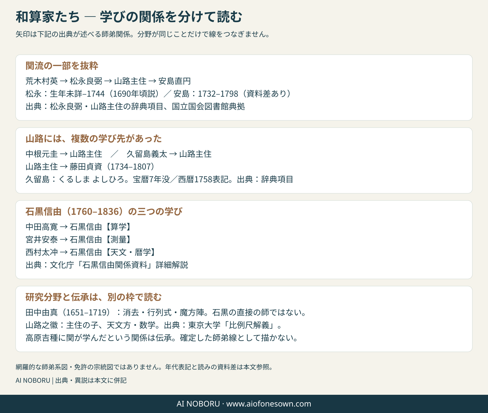

和算を知る / 和算家たち
問いを受け取り、先へ渡す人。
本を書く人、算法を広げる人、記録を残す人。何をした人なのかから、和算家たちに出会ってみましょう。
この読み物の固定リンク共有・再訪には、このリンクを使えます。
暮らしの計算を広める
吉田光由 よしだ みつよし
1598–1672
『塵劫記』の著者。そろばんの使い方と実用・遊戯の問題を結び、計算を学ぶ入口を広げました。遺題による問題の受け渡しも、後の研究を刺激します。
没年は国立国会図書館の著者典拠では1672年、同館の展示解説では1673年と記されています。
俵の積み重なりを計算式を扱う力を広げる
関孝和 せき たかかず
生年未詳–1708 「こうわ」とも読む
数字と文字を組み合わせる傍書法を発展させ、複数の未知数を含む問題の消去を進めました。円周率や累乗和などにも仕事を残しています。生年には異説があるため、確定した年として掲げません。
未知数と係数の考え方に触れる 二つの未知数から、一つを消す 和を作る係数を調べる 関の換式を使う数から計算法を探る
建部賢弘 たけべ かたひろ
1664–1739
関の門人。関の著作を解説・継承し、自身も円周率や円弧を研究しました。『綴術算経』では、何を調べ、どのように調べるかという数学研究の方法にも目を向けています。
近似値の変わり方を比べる 円弧の級数を計算する共に体系を編む
建部賢明 たけべ かたあきら（かたあき、とも）
1661–1716
賢弘の兄。関・建部兄弟による『大成算経』の編纂に関わりました。兄弟を取り違えず、一人の研究だけに集約しないことが、継承の実像へ近づく一歩です。
円理を次の世代へ
松永良弼 まつなが よしすけ
生年未詳–1744（資料により1690年頃、1694?など）
関の没後の世代に円理を発展させた和算家。生年は資料で一致しておらず、世界大百科事典は1690年頃、2022年の査読論文は1694?としています。本サイトでは一つに確定せず、不確定性を残します。
接円と求積を深める
安島直円 あじま なおのぶ
1732–1798
江戸後期の和算家。接円や円理・求積などに独自の成果を残しました。『六円無有竒術』の円の問題と、入澤の六球連鎖は別の研究として読みます。
後期円理を押し広げる
和田寧 わだ やすし（「ねい」とも）
1787–1840
「やすし」「ねい」の両読みが資料に見られます。このサイトの本文では「やすし」を用います。円理の計算法を発展させ、後続の和算家に大きな影響を与えました。「円理」は関の時代だけで完成した一つの公式ではなく、世代を重ねて育った研究分野です。
球がつながる不思議を問う
入澤新太郎 いりさわ しんたろう
1822年の算額に名を残す
六球連鎖の問題で知られます。球の大きさだけでなく、置かれた位置まで含めて元へ戻ることが要点。生没年を推測で補わず、記録で確認できる仕事から紹介します。
六球連鎖の話を読む記録を残し、近代へつなぐ
内田五観 うちだ いつみ
1805–1882
『古今算鑑』の編者。書誌では内田彌太郎恭という名も見られます。幕末から明治を生き、洋算や暦にも関わりました。本に記録する仕事が、失われた算額の内容を後世へ残しています。
人名の読みには資料差があります。生没年も、掲載した典拠での表記を基本としています。この一覧は師弟系図ではありません。並び順や時代が近いことだけで、直接の師弟関係を意味しません。
人物・年代・関係を確かめる
系譜の線は、何を意味する？
直接教わった師弟関係、免許に記された学統、同じ問題を扱う研究の流れは別です。下の図は確認できた関係を抜粋しています。人物を一列に並べた「唯一の正統系譜」ではありません。

| 人物 | 掲載する記述と注意 | 根拠 |
|---|---|---|
| 松永良弼（まつなが よしすけ） | 生年未詳–1744。世界大百科事典は1690年頃、2022年の査読論文は1694?としています。生年を一つに確定せず、資料の違いを示します。 | 世界大百科事典／日本人名大辞典 ↗／Dou・Hwang・Li（2022） ↗ |
| 久留島義太（くるしま よしひろ） | 生年未詳（1690年頃とする辞典もある）。没日は宝暦7年11月29日。旧暦の年を対応させた1757表記と、西暦1758表記があります。同じ没日でも、暦の換算により年の表記が変わります。 | 大辞泉／日本人名大辞典／世界大百科事典 ↗ |
| 田中由真（たなか よしざね） | 1651–1719。京都の和算家。消去・行列式・魔方陣を研究しました。石黒信由とは時代が異なり、直接の師弟関係ではありません。 | ブリタニカ／日本人名大辞典 ↗ |
| 安島直円（あじま なおのぶ） | 1732–1798を採用。国立国会図書館の著者典拠によります。1739–1798と記す書誌もあるため、生年の資料差を残します。18世紀に活動した人物です。 | 国立国会図書館：安島直円全集 ↗／早稲田大学：精要算法の著者書誌 ↗ |
| 山路主住（やまじ ぬしずみ） | 1704–安永元年12月11日没。旧暦の年を対応させた1772表記と、西暦1773表記があります。中根元圭・久留島義太・松永良弼に学び、安島直円・藤田貞資らを教えました。暦学と関流免許制度の双方に関わります。 | 山路主住 ↗ |
| 山路之徽 | 主住の子で、天文方に関係する和算家。東京大学の『比例尺解義』所蔵解説で、その数学・暦学との関わりをたどれます。 | 東京大学：比例尺解義 ↗ |
| 中田高寛 | 1739–1802。藤田貞資に学び、富山で算学を広めました。石黒の算学の師です。読みは辞典で「なかだ たかひろ」、図書館書誌に「ナカタ」もあります。 | 中田高寛 ↗／文化庁：石黒信由関係資料・詳細解説 ↗ |
| 石黒信由（いしぐろ のぶよし） | 1760–1836。算学を中田高寛、測量を宮井安泰、天文・暦学を西村太冲に学びました。「太沖」の表記も見られますが、本稿は文化庁の表記に従います。 | 文化庁：石黒信由関係資料・詳細解説 ↗ |
| 藤田貞資（ふじた さだすけ） | 1734–1807。山路主住の門人。定資という表記もあります。 | 山路主住 ↗／国立国会図書館典拠（藤田貞資） ↗ |
| 菅野元健（すがの もとたけ） | 生没年は未確認。1798年の交式・斜乗改良が、竹之内の研究で紹介されています。 | 竹之内（2010）、24–26頁 ↗ |
| 井関知辰 | 生没年はこのサイトでは確定していません。1690年刊『算法発揮』に、消去・行列式の研究に関わる成果を残しました。 | 後藤・小松（2004）、122–125頁 ↗ |
| 高原吉種（たかはら よしたね） | 辞典に記載のある人物です。関孝和の師だったという関係は伝承として扱い、確定した師弟の線とは分けています。 | 高原吉種 ↗／新宿区立図書館：関孝和 ↗ |
同じ分野を研究したことと、直接教わったことは別です。また、算学・測量・暦学で学び先が異なる場合もあります。図の矢印と各人物の説明は、出典が示す関係に沿って読んでください。